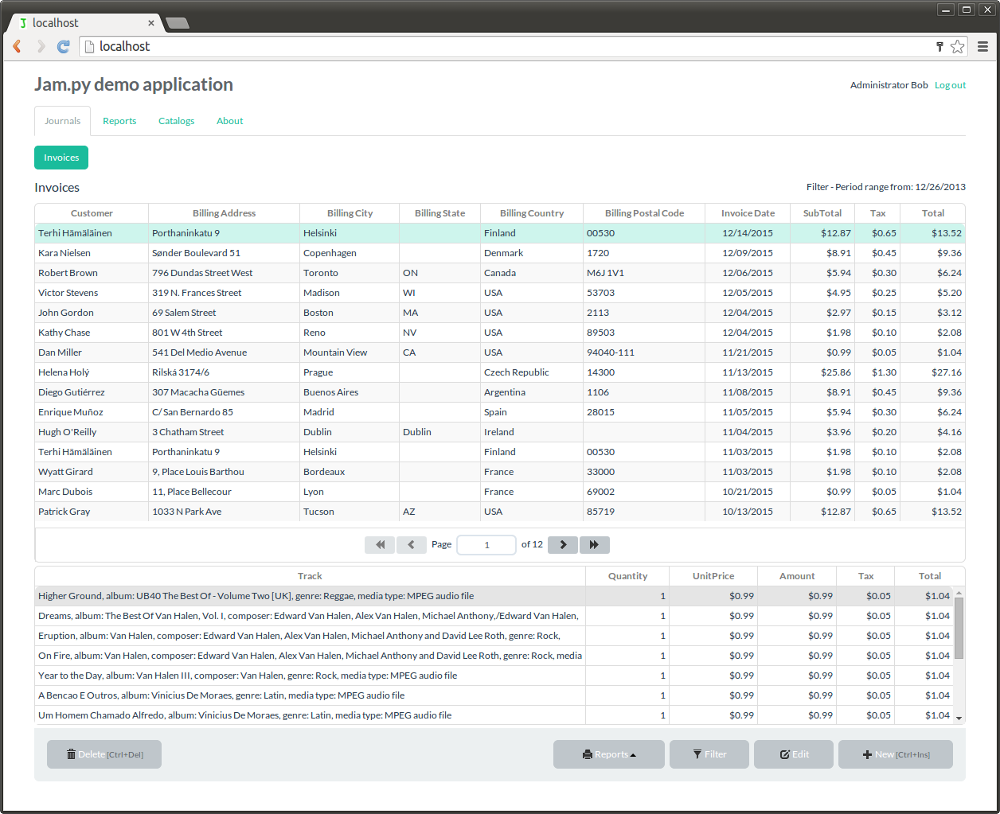

Hello World
CodeTengu Weekly 碼天狗週刊
CodeTengu Weekly 會在 GMT+8 時區的每個禮拜一早上 10:00 出刊，每一期會從目前的 curator 名單中選出三位來負責當期的內容，每一位 curator 各自負責不同的領域，如果你在這一期沒有看到自已感興趣的東西，說不定下一期就會有了。你也可以瀏覽一下前幾期的內容，有價值的東西是不會過時的。
以下是目前的 curator 陣容：
- @vinta - I failed the Turing Test - 科幻迷，最近在玩「Deus Ex」
- @saiday - Imnotyourson - 我的變態是演化的一部份，請妳放尊重一點
- @tzangms - Oceanic / 人生海海 - 衝動型購物
- @fukuball - ImFukuball - 最近好窮，有案子可以接嗎？
- @wancw - 五月病發作中
- @mingderwang
- @kako0507 - 熱愛嘗試新事物的前端工程師
- @chiahsien - Nelson
- @hiroshiyui - 非典型司書
- @uranusjr - Smaller Things - 聽說這是技術週刊，可是我不愛談技術怎麼辦
- @kkdai - 態度萬歲 - 喜歡 Golang 的略懂工程師
- @yhsiang
大家也可以關注 CodeTengu 的 Facebook、Twitter、GitHub 或微博，有很多 Weekly 看不到的內容。有任何建議或疑問也可以來 Gitter 聊聊，歡迎亂入 👺
 @tzangms
@tzangms
Great Software Isn’t Built To Last, It’s Built To Die Gracefully
這篇文章中我覺得「Don’t build for the future, build for future change」這段很不錯:
- Monitoring over scalability
- Test behaviour, not implementation
- Keep error logs squeaky clean
- Write less code
我最近的想法是這樣的, 程式寫得越久, 反而會想得太多、考慮的太遠, 而現在世界變化這麼快, 想那麼遠做那麼多, 反而會限制自己向前的速度。
The secret ingredient behind a successful tech lead
一直到看完文章後, 重看一遍才懂裡面一直在提的 VTL ( Vice Tech Lead ) 的意思, 成功的 TL 背後的秘密就是要有 VTL!
實際想像一下這個情況, 有點像是我們家 @vinta 跟 @saiday 在幫我的感覺一樣。
原本我也不是非常懂 Tech Lead 的定義啦, 而這篇文章開頭就提到了其他關於 TL 的文章, 看過一輪之後大概懂了! 這幾篇也蠻值得一讀的:

Jam.py - the fastest way to create a web database application
截圖看起來真的好棒, 有時候我們需要的不就是這些而已嗎!? 好啦, 手上有個專案似乎很適合跑一下這個 XD
A Primer on Giving Critical Feedback
身為一個主管, 在當要給有問題的同事 ... 一些負面的回饋時該怎麼說才好? 這一篇給了一個很棒的入門跟架構, 以及清楚的範例, 真是難能可貴!
 @fukuball
@fukuball
Latent Semantic Indexing: How I Built PUBmatch.co - LSI 潛在語意分析的應用
Machine Learning、Data Mining：初級
在 CodeTengu Issue 43 中我曾經分享過 Finding Similar Music using Matrix Factorization - 利用矩陣分解來推薦相似音樂（藝人） ，現在分享的這篇文章也是使用同樣的技術，只是應用在不同的地方，之前是應用在計算藝人的相似性，這篇是應用在計算文章的相似性。
其實這個技術核心就是使用奇異質分解（Singular Value Decomposition），如果了解奇異值分解的物理意義，那就可以知道為何這樣可以分析出潛在語意，比如本來是文章與單字的對應關係，可以轉換成文章與概念的對應關係，本篇舉的例子算是蠻清楚的，經過 LSI 分析之後，將每篇文章都對應到一個二維的概念空間，每個概念會是由原本的文字線性組合而成（所以才稱為「概念」），如此每篇文章就可以用二維向量來表示，也就可以比較像似性了～
延伸閱讀：
林軒田教授機器學習基石 Machine Learning Foundations 第十六講學習筆記
Machine Learning：初級
在前面十五講的內容中，基本上所有機器學習基石的理論及方法已經教授完畢了，這一講主要是分享林教授在這門領域上的一些經驗及建議，並且回顧機器學習基石的所有內容。林教授將內容整理成 power of three 來做一個總結，我個人覺得蠻有用的，在自己實作機器學習演算法或做實驗時，會讓自己有個方向感。
完成了這門課程，接下來我會繼續向大家分享後續的機器學習技法課程。大致上有三個方向，一個是更多不同轉換方式的算法，不再只有多項式轉換；一個是更多的正規化算法；最後一個是沒有那麼多標籤的算法，比如說非監督式學習算法等等。
FukuML - 簡單易用的機器學習套件
Machine Learning：中級
有人跟我說，看完了機器學習基石所有的分享及課程，結果還是不會機器學習，這... 如果沒有動手下去自己寫程式寫看看，那當然就還是不會。
不過大家別擔心，我在分享機器學習基石課程時，也跟著把每個介紹過的機器學習演算法都實作了一遍，原始碼都放在 GitHub 上了，所以大家可以去參考看看每個演算法的實作細節，看完原始碼會對課程中的數學式更容易理解。
如果大家對實作沒有興趣，只想知道怎麼使用機器學習演算法，那 FukuML 絕對會比起其他機器學習套件簡單易用，且方法及變數都會跟林軒田教授的課程類似，有看過課程的話，說不定連文件都不用看就會使用 FukuML 了。不過我還是有寫 Tutorial 啦，之後會不定期更新，讓大家可以容易上手比較重要！
Dynamic dependency injection - 動態依賴注入以 PHP 為例
PHP、Programming：中級
上次在 CodeTengu Issue 43 分享了 理解 Dependency Injection 實作原理，這篇又是一個應用 DI 的例子，大家可以對照參考一下，基本上程式架構蠻類似的，即使是小小的一個 Command 程式實作，也可以使用 DI 的技巧。
這邊所謂的「動態」依賴注入，其實也是應用 Resolver 這樣的方式來做到，基本上就類似 DI Container 在做的事，大家多看多比較～
PHP 如何使用 Closure?
PHP、Closure：初級
程式開發時我們有時會需要使用到 Closure，尤其前一陣子大家都在談 functional programming，幾乎都會應用到 Closure。回頭看看 PHP，其實 PHP 也很早就有 Closure 可以使用了。本篇文章鉅細靡遺地介紹了 PHP Closure 發展的脈絡及語法，更比較了 JavaScript Closure 與 PHP Closure 的異同，非常值得參考的一篇文章！
 @mingderwang
@mingderwang
Inside OpenAI, Elon Musk’s Wild Plan to Set Artificial Intelligence Free
研究人工智慧, 其實就是搶人大戰; 竟然還有誰可以搶贏 Google 和 Facebook? 大概只有 Elon Musk 了. 我想吸引 Zaremba 加入 OpenAI 公司的不是高薪, 而是 Musk 與 Altman 成立這家公司的理念: "要讓 AI 更好, 就不能把最新的發現只留給自己 “。 他們把 OpenAI 公司比喻為 1970s 年代的 Xerox PARC, 當年 Apple 的 Steve Jobs 就是到 XeroX PARC 參觀, 才發明了後來的麥金塔電腦的 GUI。 這又是另一個電腦科技世代的開始; 你想要成為下一個 Steve Jobs 嗎, 可以先偷看一下他們的第一個發明 "reinforcement learning"。
15 Things You Should Know About Ansible
當你學會了怎麼使用 Ansible, 就來玩一點技巧吧。這篇文章教你一些小撇步, 我尤其喜歡第 12 項; 一個簡單的方法, 就可以叫 Ansible 部署哪一些 Amazon EC2 主機, 現在才發現為何 AWS 要讓你替每一個 EC2 instance 定義 tags。